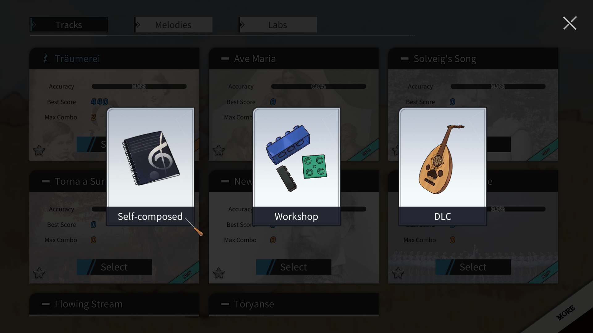
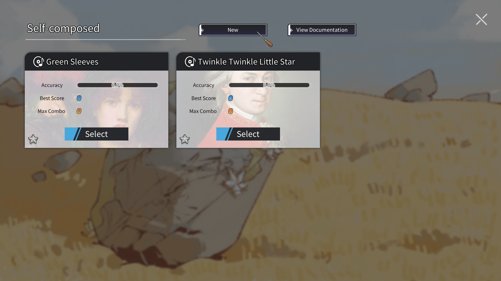

%USERPROFILE%/AppData/LocalLow/ElifGames/MoundofMusic/UGC/Music首先进入曲目选择界面，点击右下角的更多按钮，弹出原创曲目的入口，点击进入。

原创曲目界面会列出现有的所有原创曲目，点击新建加入新的原创曲目。

你可以输入一个新的原创曲目名称，该字符串将作为唯一的索引名称：
_符号如索引名称无误，将自动跳出游戏，进入如下文件夹：
%USERPROFILE%/AppData/LocalLow/ElifGames/MoundofMusic/UGC/Music运行其中的init_config.bat，同步自定义曲目所需的模板文件。
init_config.bat文件执行完毕后，将自动删除自身。如以上步骤无误，则再次进入游戏的原创曲目列表中，会发现多了一个TwinkleTwinkleLittleStar的曲目。
以模板文件TwinkleTwinkleLittleStar为例，请首先确保上一步的曲目模板已正确创建。
| Key | Value(默认值) | 说明 |
|---|---|---|
| name | Twinkle Twinkle Little Star | 曲目显示的名称，可以与索引名不同 |
| scale_name | C | 曲目的调式，会影响曲目的唱名，填写调式key字符串。详见调式数据 |
| slice_start | 7 | 曲目wave文件试听开始时间的秒数，会在曲目准备阶段循环播放 |
| slice_end | 24 | 曲目wave文件试听结束时间的秒数 |
| keytype | 1 | 按键类型：1-7键，2-12键。如曲目中使用半音，请务必使用12键 |
| composer | Wolfgang Amadeus Mozart | 作曲家姓名，在准备阶段显示 |
| lyrics | Twinkle twinkle little star\nHow I wonder what you are!\nUp above the world so high\nLike a diamond in the sky | 歌词，仅显示在过场中，换行请使用\n，另外请勿使用,（会导致csv文件解析错误） |
| copyright | Author: Elif Games | 版权信息，可在准备阶段点击info按钮查看 |
| pic_pos | 0|0|0.5 | 曲目图片在准备阶段圆形碟片中的位置及缩放：x像素偏移|y像素偏移|缩放比例 |
| card_pos | 0|0|0.7 | 曲目图片在选择界面方形音乐卡片中的位置及缩放：x像素偏移|y像素偏移|缩放比例 |
| video | musicbg1 | 视频背景，仅支持内置视频：musicbg1 - musicbg9 |
| fade_lose | 0.2 | 视频每秒变暗的百分比 |
| fade_hit | 0.2 | 视频每次三连击时变亮的百分比 |
| alpha_area | 0.05|0.4 | 视频的透明度区间：最低透明度|最高透明度 |
| version_info | First version. | 本版本的信息说明，将会被提交至创意工坊 |
| 调式key | 内部调式值 | 说明 |
|---|---|---|
| C | 1 | C大调 |
| C♯ | 2 | C♯大调 |
| D | 3 | D大调 |
| D♯ | 4 | D♯大调 |
| E | 5 | E大调 |
| F | 6 | F大调 |
| F♯ | 7 | F♯大调 |
| G | 8 | G大调 |
| G♯ | 9 | G♯大调 |
| A | 10 | A大调 |
| A♯ | 11 | A♯大调，B♭大调也需要填A♯ |
| B | 12 | B大调 |
| a | 1 | a小调 |
| a♯ | 2 | a♯小调 |
| b | 3 | b小调 |
| c | 4 | c小调 |
| c♯ | 5 | c♯小调 |
| d | 6 | d小调 |
| d♯ | 7 | d♯小调 |
| e | 8 | e小调 |
| f | 9 | f小调 |
| f♯ | 10 | f♯小调 |
| g | 11 | g小调 |
| g♯ | 12 | g♯小调 |
| 音高key | 简谱唱名 | 意式唱名 | 音名 | 对应钢琴 |
|---|---|---|---|---|
| 41 | 1, | do, | c | 小字组c |
| -41 | #1, | dod, | #c | |
| 42 | 2, | re, | d | 小字组d |
| -42 | #2, | red, | #d | |
| 43 | 3, | mi, | e | 小字组e |
| 44 | 4, | fa, | f | 小字组f |
| -44 | #4, | fad, | #f | |
| 45 | 5, | sol, | g | 小字组g |
| -45 | #5, | sold, | #g | |
| 46 | 6, | la, | a | 小字组a |
| -46 | b7, | sib, | #a | |
| 47 | 7, | si, | b | 小字组b |
| 51 | 1 | do | c1 | 小字一组c1 |
| -51 | #1 | dod | #c1 | |
| 52 | 2 | re | d1 | 小字一组d1 |
| -52 | #2 | red | #d1 | |
| 53 | 3 | mi | e1 | 小字一组e1 |
| 54 | 4 | fa | f1 | 小字一组f1 |
| -54 | #4 | fad | #f1 | |
| 55 | 5 | sol | g1 | 小字一组g1 |
| -55 | #5 | sold | #g1 | |
| 56 | 6 | la | a1 | 小字一组a1 |
| -56 | b7 | sib | #a1 | |
| 57 | 7 | si | b1 | 小字一组b1 |
| 61 | 1' | do' | c2 | 小字二组c2 |
| -61 | #1' | dod' | #c2 | |
| 62 | 2' | re' | d2 | 小字二组d2 |
| -62 | #2' | red' | #d2 | |
| 63 | 3' | mi' | e2 | 小字二组e2 |
| 64 | 4' | fa' | f2 | 小字二组f2 |
| -64 | #4' | fad' | #f2 | |
| 65 | 5' | sol' | g2 | 小字二组g2 |
| -65 | #5' | sold' | #g2 | |
| 66 | 6' | la' | a2 | 小字二组a2 |
| -66 | b7' | sib' | #a2 | |
| 67 | 7' | si' | b2 | 小字二组b2 |
pip install midomom_converter.py# -*- coding: utf-8 -*-
# 将midi文件转化为moundofmusic数据
# pip install mido
# Midi文件名
MIDI_FILE = 'YOUR_MIDI.mid'
# 输出文件名
OUTPUT_FILE = 'note_raw.csv'
# midi音高：moundofmusic音高，音域三个八度
DIC_NOTES = {48: 41, 49: -41, 50: 42, 51: -42, 52: 43, 53: 44, 54: -44, 55: 45, 56: -45, 57: 46, 58: -46, 59: 47, 60: 51, 61: -51, 62: 52, 63: -52, 64: 53, 65: 54, 66: -54, 67: 55, 68: -55, 69: 56, 70: -56, 71: 57, 72: 61, 73: -61, 74: 62, 75: -62, 76: 63, 77: 64, 78: -64, 79: 65, 80: -65, 81: 66, 82: -66, 83: 67}
DIC_NOTES_OUT = {21: 16, 22: -16, 23: 17, 24: 21, 25: -21, 26: 22, 27: -22, 28: 23, 29: 24, 30: -24, 31: 25, 32: -25, 33: 26, 34: -26, 35: 27, 36: 31, 37: -31, 38: 32, 39: -32, 40: 33, 41: 34, 42: -34, 43: 35, 44: -35, 45: 36, 46: -36, 47: 37, 84: 71, 85: -71, 86: 72, 87: -72, 88: 73, 89: 74, 90: -74, 91: 75, 92: -75, 93: 76, 94: -76, 95: 77, 96: 81, 97: -81, 98: 82, 99: -82, 100: 83, 101: 84, 102: -84, 103: 85, 104: -85, 105: 86, 106: -86, 107: 87, 108: 91}
import mido
import csv
def midi_to_mom(filename_midi, filename_csv):
# 读取MIDI文件
midi_file = mido.MidiFile(filename_midi)
# 获取MIDI文件的ticks_per_beat
ticks_per_beat = midi_file.ticks_per_beat
# 初始化tempo
tempo = 1000000 # 默认tempo
# 计算每个tick的时间（秒）
tick_time = tempo / (ticks_per_beat * 1000000)
# 准备CSV文件
with open(filename_csv, 'w', newline='') as csvfile:
count = 0
result = []
writer = csv.writer(csvfile)
# 写入标题行
writer.writerow(['id', 'pitch', 'time'])
# 初始化变量
total_time = 0.0
notes_on = {} # 存储音符的开始时间和音符号
# 遍历MIDI文件中的每个轨道
for track in midi_file.tracks:
for msg in track:
if msg.type == 'set_tempo': # 更新tick_time
tempo = msg.tempo
tick_time = tempo / (ticks_per_beat * 1000000)
# print(f'tempo change to: {tempo}')
total_time += msg.time * tick_time # 当前累积时间记录
if msg.type == 'note_on' and msg.velocity > 0: # 计算当前音符的开始时间
notes_on[msg.note] = total_time
count += 1
elif msg.type == 'note_off' or (msg.type == 'note_on' and msg.velocity == 0): # 计算当前音符的停止时间
if msg.note in notes_on:
play_time = notes_on[msg.note]
# 转化、记录数据
if (msg.note not in DIC_NOTES.keys()):
note = DIC_NOTES_OUT[msg.note] # 超出音域的音符
print(f'WARNING! <id:{count} pitch:{note}> not in range, need to be transpose!')
else:
note = DIC_NOTES[msg.note]
result.append((count, note, play_time))
writer.writerow([count, note, round(play_time,3)]) # 时间只保留三位小数
print(f'Successfully create midi data file: {filename_csv}')
return midi_file, result
if __name__ == '__main__':
midi_file, result = midi_to_mom(MIDI_FILE, OUTPUT_FILE)
转化midi文件
mom_converter.py放在同文件夹中mom_converter.py，选择Edit with IDLE，打开python脚本MIDI_FILE = 'YOUR_MIDI.mid'
F5执行脚本，如果提示成功，则会生成note_raw.csv文件，此文件与note.csv格式一致完成其他配置